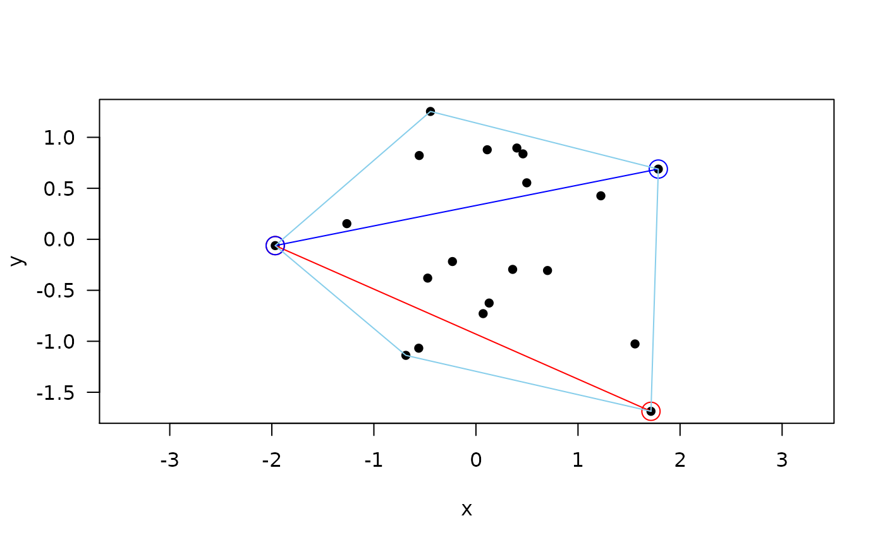

which_tri.RdFind where the original positions of components are in a matrix given a logical vector corresponding to the lower or upper triangle stored by columns. Similar to which(.., arr.ind = TRUE)
which_tri(cond, diag = FALSE, lower = TRUE)
| cond | logical vector of length that of the lower triangle |
|---|---|
| diag | logical: are the diagonal entries included? |
| lower | logical: is this the lower triangle? If FALSE it is the upper. |
a two column matrix with the row and column indices as the rows
set.seed(123) X <- matrix(rnorm(20*2), 20, 2) plot(X, asp = 1, pch = 16, las = 1, xlab = "x", ylab = "y")dX <- dist(X) ij <- which_tri(dX == max(dX)) points(X[as.vector(ij), ], col = "red", cex = 2, pch = 1)ij <- which_tri(dX == sort(dX, decreasing = TRUE)[2]) points(X[as.vector(ij), ], col = "blue", cex = 2, pch = 1)